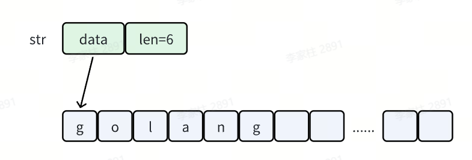
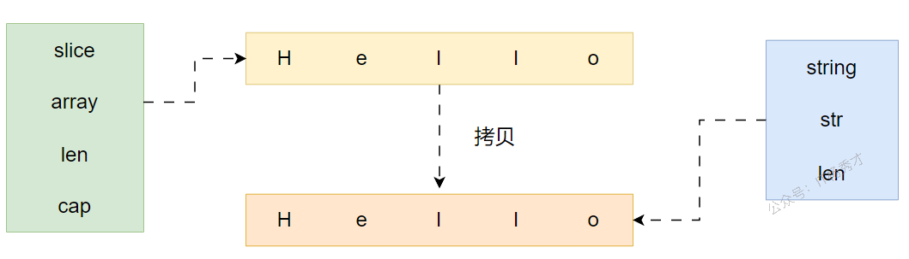
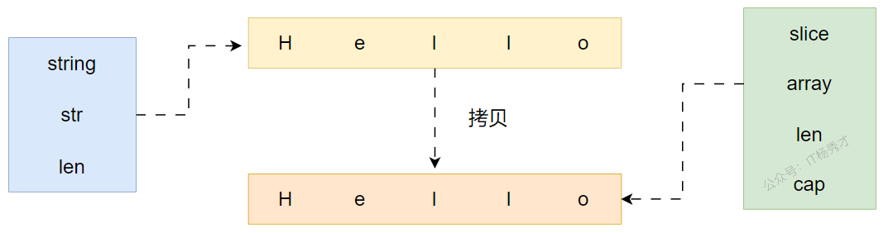

📝 string的特点
- string是不可变的，是一个只读的字符数组，类似于 Java
- 每个字符串的长度虽然也是固定的，但是字符串的长度并不是字符串类型的一部分
- 字符串的编码为 UTF-8，源代码中的文本字符串通常被解释为采用 UTF-8 编码的 Unicode 码点（rune）序列，因此字符串可以包含任意的数据
🔧 底层原理
📋 string 的本质
在 Go 语言中，字符串其实就是一串由 UTF-8 编码的字符序列。让我们看一下官方库对 string 的描述：
|
|
从源码注释可以理解：
- 字符串是所有 8bit 字节的集合，但不一定是 UTF-8 编码的文本
- 字符串可以为 empty，但不能为 nil，empty 字符串就是一个没有任何字符的空串
"" - 字符串不可以被修改，所以字符串类型的值是不可变的
🏗️ string 的数据结构
string 在 Go 中的源码如下，本质上是一个结构体：
|
|
在 src/runtime/string.go 文件中，还定义了 stringStruct 结构：
|
|
这两个结构体字段含义：
- Data/str：指向底层字符数组的首地址
- Len/len：表示字符串的长度（字节数）

重要说明：
StringHeader是字符串在反射包中的表现stringStruct是字符串在运行时状态下的表现Len字段存储的是实际的字节数，而不是字符数，所以对于非单字节编码的字符，其结果可能多于字符个数
🔄 字符串的创建过程
当我们创建一个 string 的时候，可以理解为有两步：
- 根据给定的字符创建出
stringStruct结构 - 将
stringStruct结构转化为string类型
通过观察字符串的结构定义我们可以发现，其定义中并没有一个表示容量（Cap）的字段，所以意味着字符串类型并不能被扩容，字符串上的写操作包括拼接、追加等等都是通过拷贝来实现的。
🎯 string 修改 vs 重新赋值
前面我们说了，string 是只读的，不可以被改变，但是我们在编码过程中，进行重新赋值也是很正常的，既然可以重新赋值，为什么说不能被修改呢，这不是互相矛盾吗？
这里要弄清楚一个概念：字符串修改并不等于重新赋值。
|
|
示例：
|
|
运行结果：
|
|
程序会报错，提示 string 是不可修改的。
🛠️ 常见操作
📏 获取字符串长度
len(str)：输出字符串的长度（字节数）
📦 strings 包常用操作
| 方法 | 功能说明 |
|---|---|
strings.Contains(s, substr) |
判断字符串 s 是否包含子串 substr |
strings.Count(s, substr) |
统计子串 substr 在 s 中出现的次数 |
strings.Split(s, sep) |
使用分隔符 sep 分割字符串 s |
strings.HasPrefix(s, prefix) |
判断 s 是否以 prefix 开头 |
strings.HasSuffix(s, suffix) |
判断 s 是否以 suffix 结尾 |
strings.Index(s, substr) |
查找子串 substr 在 s 中首次出现的位置 |
strings.Repeat(s, count) |
将字符串 s 重复 count 次 |
strings.Replace(s, old, new, n) |
将 s 中的 old 替换为 new，最多替换 n 次 |
🔤 大小写转换
strings.ToLower("GO")→gostrings.ToUpper("java")→JAVA
✂️ 去除字符
strings.Trim("#hello #go#", "#")：去除字符串两端的指定字符
🔄 字符数组转换
string 可以被转换为 []byte 和 []rune：
[]byte：适合处理 ASCII 字符[]rune：适合处理包含中文、emoji 等多字节字符
🔍 访问字符
s[i]：直接访问底层字符数组的第 i 个 byte
📝 字符串声明方式
Go 语言中以字面量来声明字符串有两种方式，双引号和反引号：
|
|
🗨️ 双引号声明
使用双引号声明的字符串和其他语言中的字符串没有太多的区别，但是这种使用双引号的字符串只能用于单行字符串的初始化，当字符串里使用到一些特殊字符，比如双引号、换行符等等需要用 \ 进行转义。
📎 反引号声明
反引号声明的字符串没有这些限制，字符内容即为字符串里的原始内容，所以一般用反引号来声明比较复杂的字符串，比如 JSON 串。
|
|
使用场景对比：
- 双引号：适合简单的单行字符串，需要转义特殊字符
- 反引号：适合多行字符串、JSON、正则表达式等复杂字符串，无需转义
🔄 string 与 []byte 的转换原理
📖 转换语法
既然 string 是不可修改的，那可不可以将字符串转化为字节数组，然后通过下标修改字节数组，再转化回字符串呢？答案是可行的。
|
|
运行结果：
|
|
Hello 变成了 HAllo，好像达到了我们的目的。这里需要注意，虽然这种方式看似可行，修改了字符串 Hello，但其实并不是我们所见的这样。最终得到的只是 ss 字符串的一个拷贝，源字符串并没有变化。
🧬 转换底层原理
string 与 []byte 的转换其实会发生一次内存拷贝，并申请一块新的切片内存空间。
[]byte 转 string
byte 切片转化为 string，大致过程分为三步：
- 新申请切片内存空间，构建内存地址为
addr，长度为len - 构建
string对象，指针地址为addr，len字段赋值为len（string.str = addr；string.len = len；） - 将原切片中数据拷贝到新申请的
string中指针指向的内存空间

🔁 string 转 []byte
string 转化为 byte 数组同样简单，大致分为两步：
- 新申请切片内存空间
- 将
string中指针执行内存区域的内容拷贝到新切片

⚡ 转换优化场景
很多场景中会用到 []byte 转化为 string，但是并不是每一次转化，都会像上述过程一样，发生一次内存拷贝。在什么情况下不会发生拷贝呢？
转化为的字符串被用于临时场景，举几个例子：
- 字符串比较：
string(ss) == "Hello" - 字符串拼接：
"Hello" + string(ss) + "world" - 用作查找：比如
map的key，val := map[string(ss)]
这几种情况下，[]byte 转化成的字符串并不会被后面程序用到，只是在当前场景下被临时用到，所以并不会拷贝内存，而是直接返回一个 string，这个 string 的指针（string.str）指向切片的内存。
🔗 字符串拼接
在 Go 语言中，字符串拼接有多种方式，不同方式的性能差异很大。
📊 五种拼接方式对比
➕ 使用 + 运算符
|
|
特点：
- 使用简单，直观易懂
- 性能最差：每次拼接都会创建新的字符串，涉及内存分配和拷贝
- 不适合大量字符串拼接场景
🧾 使用 fmt.Sprintf
|
|
特点：
- 支持格式化输出，灵活性高
- 性能一般：需要解析格式字符串，有额外开销
- 适合需要格式化输出的场景
🏗️ 使用 strings.Builder（推荐）
|
|
核心方法：
WriteString(str string)：添加字符串WriteRune(r rune)：添加单个 Unicode 字符WriteByte(b byte)：添加单个字节Grow(n int)：预分配 n 字节的内存空间
特点：
- 性能最好：预分配内存，避免重复分配和拷贝
- 专门用于字符串拼接场景
- 推荐使用在性能敏感的场景
性能优化技巧：
|
|
🪣 使用 bytes.Buffer
|
|
特点：
- 功能与
strings.Builder类似 - 性能稍差：有额外的接口开销
- 如果需要同时处理字节和字符串，可以使用
🧱 使用 []byte 切片
|
|
特点：
- 性能较好：直接操作字节切片
- 需要手动管理内存
- 适合对性能有极高要求的场景
⚡ 性能对比总结
| 拼接方式 | 性能 | 适用场景 |
|---|---|---|
+ 运算符 |
⭐ | 少量字符串拼接，简单场景 |
fmt.Sprintf |
⭐⭐ | 需要格式化输出的场景 |
strings.Builder |
⭐⭐⭐⭐⭐ | 大量字符串拼接，性能敏感场景 |
bytes.Buffer |
⭐⭐⭐⭐ | 需要同时处理字节和字符串 |
[]byte |
⭐⭐⭐⭐ | 对性能有极高要求，手动管理内存 |
💡 最佳实践建议
- 简单拼接：少量字符串（2-3个）直接使用
+即可 - 循环拼接：在循环中拼接字符串时，必须使用
strings.Builder - 预分配内存：如果知道最终字符串的大致长度，使用
Grow()预分配内存 - 格式化输出：需要格式化时使用
fmt.Sprintf，否则优先使用strings.Builder
🧪 性能测试详解
🧪 测试代码
采用 testing 包下的 benchmark 测试其性能：
|
|
📊 测试结果
|
|
可以看到，采用 fmt.Sprintf 拼接字符串性能是最差的，性能最好的方式是 strings.Builder 和 strings.Join。
🔬 性能原理分析
| 方法 | 说明 |
|---|---|
| + | + 拼接 2 个字符串时，会生成一个新的字符串，开辟一段新的内存空间，新空间的大小是原来两个字符串的大小之和，所以每拼接一次就要开辟一段空间，性能很差 |
| fmt.Sprintf | Sprintf 会从临时对象池中获取一个对象，然后格式化操作，最后转化为 string，释放对象，实现很复杂，性能也很差 |
| strings.Builder | 底层存储使用 []byte，转化为字符串时可复用，每次分配内存的时候，支持预分配内存并且自动扩容，所以总体来说，开辟内存的次数就少，性能最好 |
| bytes.Buffer | 底层存储使用 []byte，转化为字符串时不可复用，底层实现和 strings.Builder 差不多，性能比 strings.Builder 略差一点，区别是 bytes.Buffer 转化为字符串时重新申请了一块空间，存放生成的字符串变量，而 strings.Builder 直接将底层的 []byte 转换成了字符串类型返回了回来，性能仅次于 strings.Builder |
| append | 直接使用 []byte 扩容机制，可复用，支持预分配内存和自动扩容，性能只比 + 和 Sprintf 好，但是如果能提前分配好内存的话，性能将会仅次于 strings.Builder |
| strings.Join | strings.Join 的性能约等于 strings.Builder，在已知字符串 slice 的时候可以使用，未知时不建议使用，构造切片也是会有性能损耗的 |
📌 性能对比总结
性能对比：
strings.Builder≈strings.Join>bytes.Buffer>append>+>fmt.Sprintf
使用建议：
- 如果进行少量的字符串拼接时，直接使用
+操作符是最方便也算是性能最高的，就无需使用strings.Builder - 如果进行大量的字符串拼接时，使用
strings.Builder是最佳选择
🤔 为什么这么设计
可能大家都会考虑到，为什么一个普通的字符串要设计这么复杂，还需要使用指针。暂时没找到官方文档的说明。
个人猜想，当遇到一个非常长的字符时，这样做使得 string 变得非常轻量，可以很方便的进行传递而不用担心内存拷贝。虽然在 Go 中，不管是引用类型还是值类型参数传递都是值传递，但指针明显比值传递更节省内存。
📚 总结
🎯 核心要点
- string 是不可变的只读字符数组，采用 UTF-8 编码
- 底层通过
StringHeader结构体实现，包含数据指针和长度 - 字符串操作主要使用
strings包提供的丰富 API - 字符串拼接优先使用
strings.Builder，在性能敏感场景下预分配内存
🧠 关键原理
- 底层结构：
string本质是一个结构体，包含指向字节数组的指针和长度 - 不可变性：字符串不能被修改，所有操作都是通过拷贝实现
- 转换开销：
string与[]byte转换会发生内存拷贝，但在临时场景下会优化 - 性能选择：根据场景选择合适的拼接方式，大量拼接使用
strings.Builder
✅ 最佳实践
- 少量拼接：使用
+操作符 - 大量拼接：使用
strings.Builder并预分配内存 - 格式化输出：使用
fmt.Sprintf - 复杂字符串：使用反引号声明，避免转义
- 性能敏感：注意转换开销，利用临时场景优化